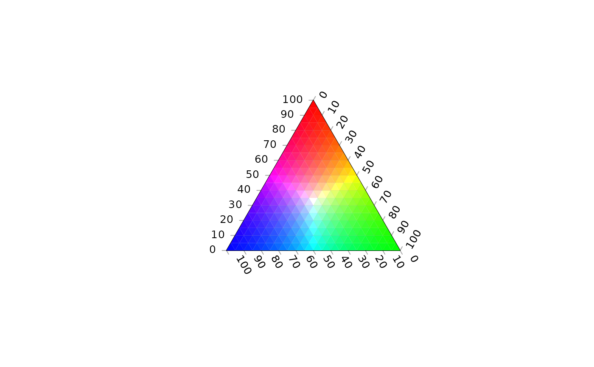
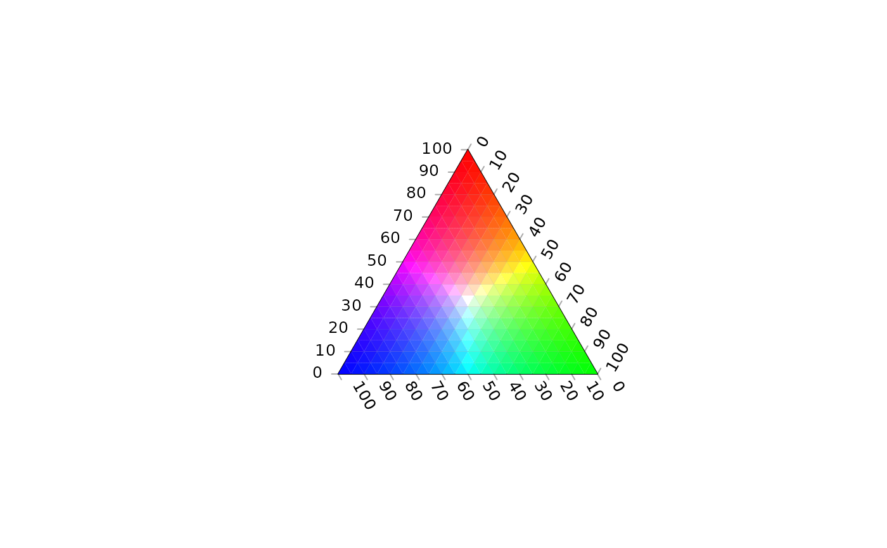

Colour a ternary plot according to the output of a function.
Usage
ColourTernary(
values,
spectrum = hcl.colors(256L, palette = "viridis", alpha = 0.6),
resolution = sqrt(ncol(values)),
direction = getOption("ternDirection", 1L),
legend,
...
)
ColorTernary(
values,
spectrum = hcl.colors(256L, palette = "viridis", alpha = 0.6),
resolution = sqrt(ncol(values)),
direction = getOption("ternDirection", 1L),
legend,
...
)Arguments
- values
Numeric matrix, possibly created using
TernaryPointValues(), with four named rows:x,y, Cartesian coordinates of each triangle centre;z, value associated with that coordinate;down, triangle direction:0= point upwards;1= point downwards.- spectrum
Vector of colours to use as a spectrum, or
NULLto usevalues["z", ].- resolution
The number of triangles whose base should lie on the longest axis of the triangle. Higher numbers will result in smaller subdivisions and smoother colour gradients, but at a computational cost.
- direction
(optional) Integer specifying the direction that the current ternary plot should point: 1, up; 2, right; 3, down; 4, left.
- legend
Character vector specifying annotations for colour scale. If not provided, no colour legend is displayed. Specify
TRUEto generate automatically, or a single integer to generatelegendannotations.- ...
Further arguments to
SpectrumLegend().
Value
ColourTernary() is called for its side effect – colouring a ternary
plot according to values. It invisibly returns NULL.
See also
Fine control over continuous legends:
PlotTools::SpectrumLegend()
Other contour plotting functions:
TernaryContour(),
TernaryDensityContour(),
TernaryPointValues()
Other functions for colouring and shading:
TernaryTiles()
Examples
# Depict a function across a ternary plot with colour and contours
TernaryPlot(alab = "a", blab = "b", clab = "c") # Blank plot
FunctionToContour <- function (a, b, c) {
a - c + (4 * a * b) + (27 * a * b * c)
}
# Evaluate function
values <- TernaryPointValues(FunctionToContour, resolution = 24L)
# Use the value of the function to determine the brightness of the plot
ColourTernary(
values,
x = "topleft",
bty = "n", # No box
legend = signif(seq(max(values), min(values), length.out = 4), 3)
)
# Overlay contours
TernaryContour(FunctionToContour, resolution = 36L)
 # Directly specify the colour with the output of a function
# Create a function that returns a vector of rgb strings:
rgbWhite <- function (r, g, b) {
highest <- apply(rbind(r, g, b), 2L, max)
rgb(r/highest, g/highest, b/highest)
}
TernaryPlot()
values <- TernaryPointValues(rgbWhite, resolution = 20)
ColourTernary(values, spectrum = NULL)

# Directly specify the colour with the output of a function
# Create a function that returns a vector of rgb strings:
rgbWhite <- function (r, g, b) {
highest <- apply(rbind(r, g, b), 2L, max)
rgb(r/highest, g/highest, b/highest)
}
TernaryPlot()
values <- TernaryPointValues(rgbWhite, resolution = 20)
ColourTernary(values, spectrum = NULL)
